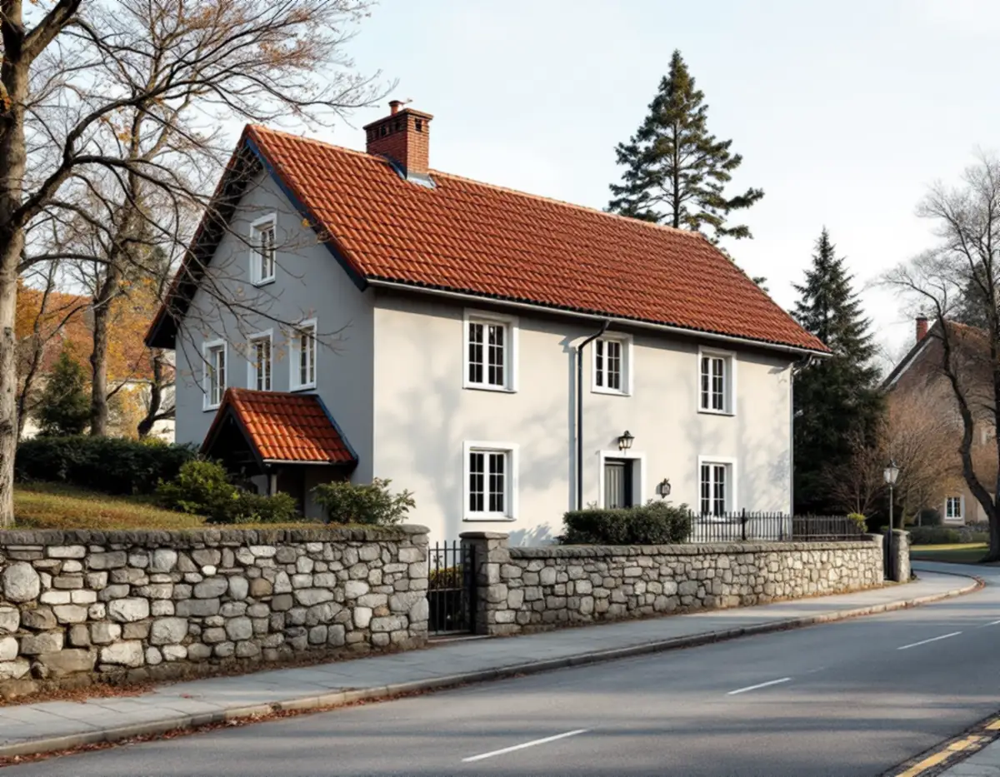
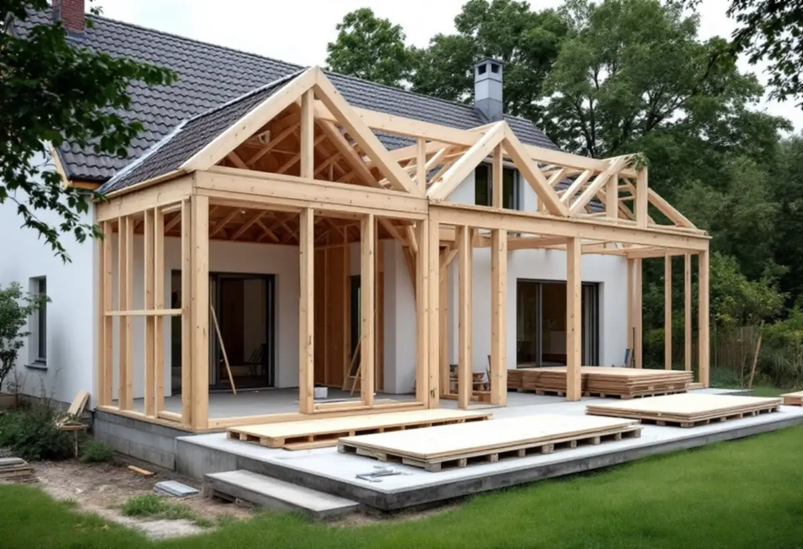

Platsbesök
Vi går igenom huset, tomten och vad som ska byggas.

Solna är en egen kommun med egna rutiner för bygglov, ritningar och kontroller.
Beskriv jobbet kort.
Något blev fel. Kontrollera uppgifterna eller ring 08 12 410 276.
Vi tittar på jobbet på plats innan du får offert.
Du ser vad som ingår och vad det kostar.
Vi drar av ROT direkt och sköter ansökan.
Geal Entreprenad AB, Bromma. Org.nr 559303-7566.

Ska villan byggas till, byggas om eller ersättas av ett nytt hus är det handlingarna och kontrollplanen som avgör hur snabbt ärendet går. Geal Entreprenad AB tar sådana projekt som total entreprenad, och här är vad Solna stad kräver från första ritning till slutbesked.
Solna stad skriver att ritningarna ska ha samma kvalitet som om de var ritade av en person med expertkunskap. De ska vara ritade i svart på vit bakgrund, skalenliga, måttsatta och försedda med norrpil och skalstock, och de ska tydligt visa vad som finns, vad som rivs och vad som tillkommer. Varje handling skickas som en separat pdf-fil, namngiven efter innehållet.
Underlaget för ett nytt hus eller en tillbyggnad börjar ofta i stadens e-arkiv. Där finns bygglovshandlingar för avslutade ärenden från början av 1900-talet fram till 2017, med ritningar, tomtkartor och beslut, men många ärenden behöver fortfarande beställas eftersom de kan omfattas av sekretess. Vid nybyggnad och tillbyggnad kan staden behöva ett kartunderlag med plangränser, fastighetsgränser och befintliga byggnader, och de kartorna kostar enligt staden pengar.
Solna stad påpekar att de flesta områden i staden har en detaljplan och att fastigheter utanför plan ofta har stora kulturvärden och är skyddade på annat sätt, som slottsområdena Haga och Ulriksdal. Vi tar fram de gamla ritningarna och plankartan innan något nytt ritas.
Prickmark är enligt Solna stad ett samlingsbegrepp för markeringar i detaljplanen som begränsar hur man får bygga eller plantera. Prickarna kan vara ritade på olika sätt, och betydelsen varierar från totalt byggförbud till att tillåta till exempel ett underbyggt bjälklag.
Många äldre detaljplaner gäller fortfarande, och då gäller den tolkning av prickmarken som var praxis när planen gjordes. Två planer med samma prickar kan alltså betyda olika saker. Vill du ändra en detaljplan hänvisar staden till sin planenhet via kontaktcenter. Har du frågor om just din fastighet kan du boka en digital rådgivning med bygglovshandläggare och byggnadsinspektör – där ges generella svar, men inget besked om lov.
En kontrollplan krävs för åtgärder som kräver bygglov eller anmälan, oavsett om du ska bygga, riva eller förändra. Den beskriver i punktform vad som ska kontrolleras, vem som gör det, hur det görs och vad kontrollen görs mot, till exempel en ritning, en fabrikantanvisning eller Boverkets byggregler. Vid rivning ska den också visa vilket farligt avfall som kan uppstå och hur det tas om hand.
Utan godkänd kontrollplan blir det inget startbesked. Vid enklare åtgärder lämnas planen med bygglovsansökan, och ärendet är komplett först när en godtagbar kontrollplan har kommit in. Vid större åtgärder lämnas förslaget före det tekniska samrådet. Det är alltid byggherren som ansvarar för att kontrollplanen finns och följs.
Vid större och mer komplicerade åtgärder ska det enligt staden oftast finnas en kontrollansvarig, som hjälper till med kontrollplanen, är med på möten och skriver ett utlåtande inför slutbeskedet. För mindre ändringar av en- och tvåbostadshus, mindre komplementbyggnader som garage och carport, murar, plank och fasadändringar behövs oftast ingen. Staden skriver att alla kontrollansvariga ska vara certifierade och hänvisar till certifieringsorganens register.
Enligt Solna stad ska beslut om bygglov fattas inom tio veckor från att ansökan är komplett, och för ett komplicerat projekt kan tiden förlängas till 20 veckor. För vissa enkla åtgärder kan bygglovet innehålla startbeskedet. För större åtgärder hålls först ett tekniskt samråd där förutsättningarna för startbesked gås igenom.
Innan det byggda får användas krävs ett slutbesked. Det kommer när alla krav i bygglov, kontrollplan och startbesked är uppfyllda, och byggherren bör begära det i god tid innan bygget är klart. Flyttar du in eller tar en del av huset i bruk utan slutbesked tar byggnadsnämnden ut en byggsanktionsavgift. Vi sammanställer kontrollerna under bygget, så att underlaget finns när det är dags. Läs mer om nybyggnad av villa och om tillbyggnad.
Vi går igenom huset, tomten och vad som ska byggas.
Gamla ritningar och detaljplanen tas fram innan något ritas.
Handlingar enligt Solnas krav och ett förslag till kontrollplan.
Varje del av bygget redovisas för sig.
Vi bygger när startbeskedet finns och dokumenterar kontrollerna.
Underlaget lämnas så att huset får tas i bruk.
Rotavdraget är 30 procent av arbetskostnaden, högst 50 000 kronor per person och år och högst 75 000 kronor tillsammans med rutavdrag. Material och resor ger inget avdrag, och du ska äga bostaden när arbetet utförs.
Rotavdraget gäller ombyggnad och tillbyggnad av en befintlig bostad, men inte ett helt nytt hus. Skatteverket ger inget avdrag för att skriva bygglovshandlingar eller anlita arkitekt, kvalitetsansvarig eller besiktningsman, så den delen redovisar vi separat i kostnadsförslaget.
Projektets storlek, hur mycket underlag som måste tas fram och om en kontrollansvarig behövs väger tyngst. Efter ett gratis platsbesök får du ett skriftligt kostnadsförslag.
Total entreprenad för villan.
Byggfirma →Takbyte, takbesiktning och plåtarbeten.
Takläggare i Solna →Råsunda, Stocksundstorp och Råsta.
Takrenovering i Solna →Kulturmiljöerna, kartan och lovet.
Attefallshus i Solna →Bostadsrätt, stambyte och villor.
Badrumsrenovering i Solna →Radhusen, föreningen och lovet.
Fasadmålning i Solna →Putsade villor och krav på material.
Fasadrenovering i Solna →Råsunda, bygglovet och handlingarna.
Fönsterbyte i Solna →Fönster från 1950-talet, kitt och fogar.
Fönsterrenovering i Solna →Bostadsrätter i Råsunda, Hagalund och Huvudsta.
Golvläggare i Solna →Ta fram och slipa trägolvet under mattan.
Golvslipning i Solna →Bostadsrätter, fläktar och Råsundas villor.
Köksrenovering i Solna →Villor, radhus och lägenheter i Solna.
Målare i Solna →Plåt i Solnas kulturmiljöer.
Plåtslagare i Solna →Väggar, dörrar, balkong och radhus.
Snickare i Solna →Gatusidan, gårdssidan och konstruktionen.
Takbyte i Solna →Tapet efter husets ålder och underlag.
Tapetsering i Solna →Kulturmiljöerna och lovet.
Tillbyggnad i Solna →Hela lägenheten, elen inräknad.
Totalrenovering i Solna →Eller ring 08 12 410 276, mån–fre 08–17.
Beskriv jobbet kort.
Något blev fel. Kontrollera uppgifterna eller ring 08 12 410 276.